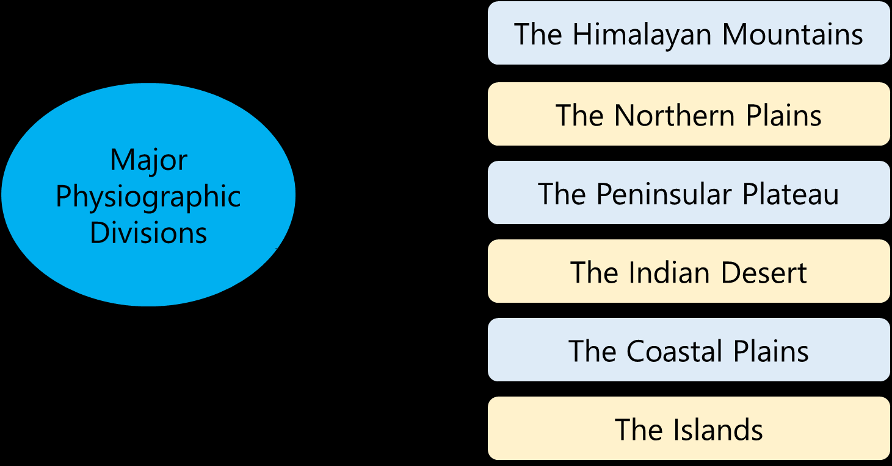
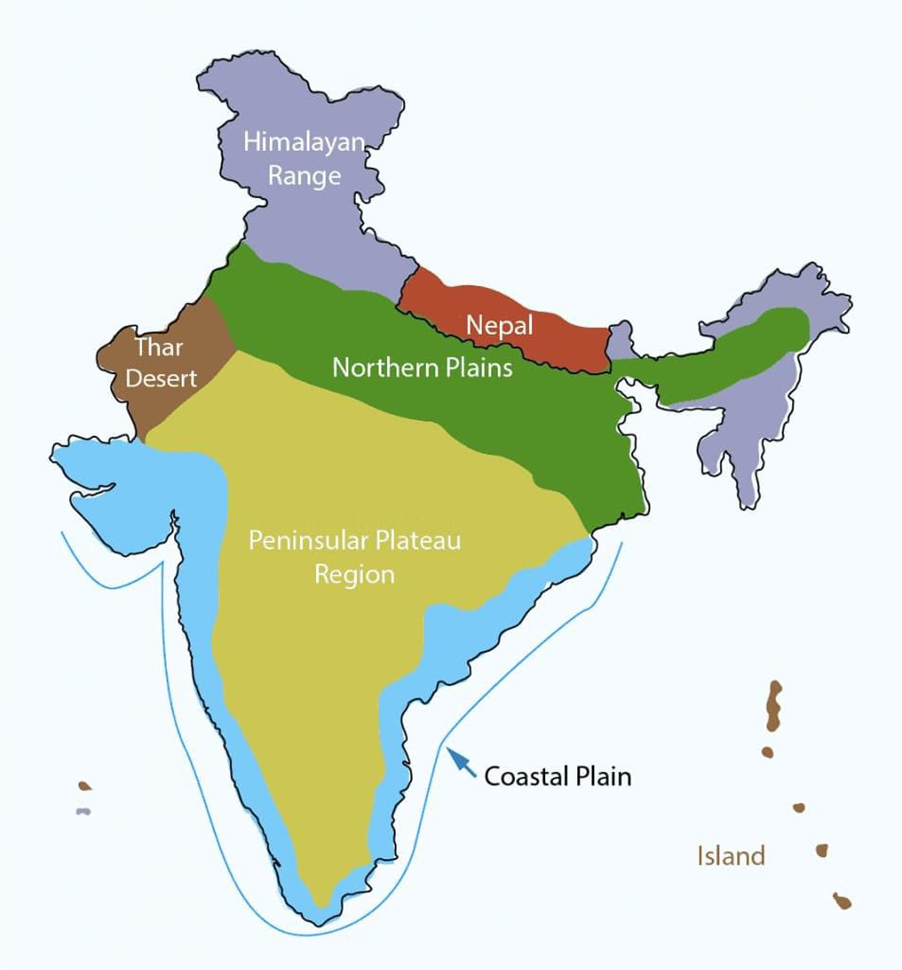
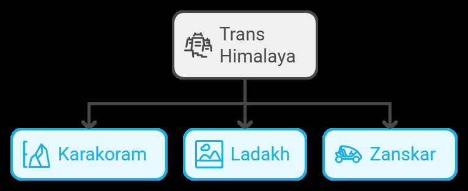
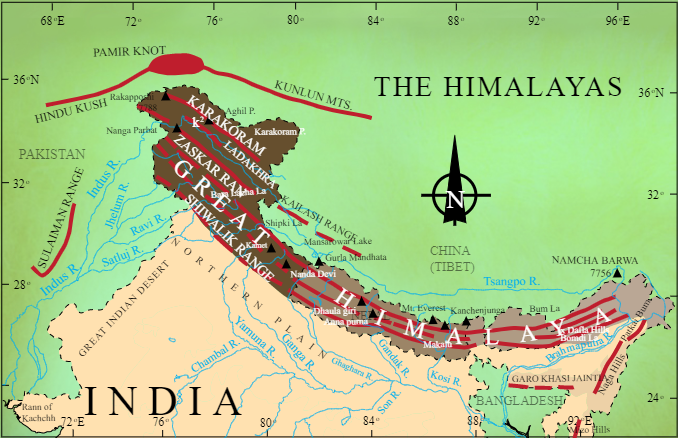
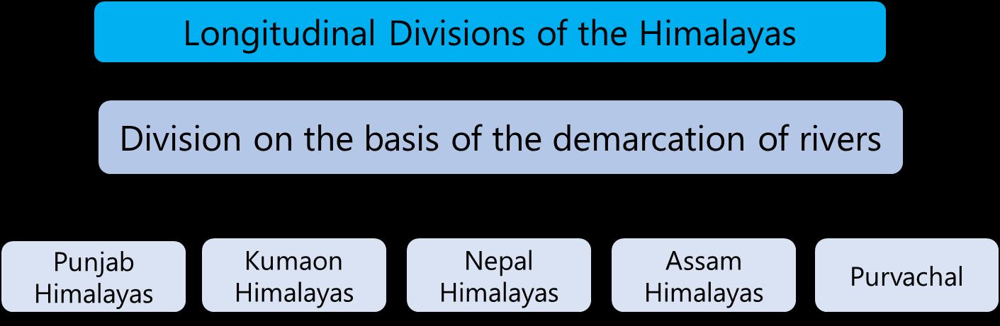
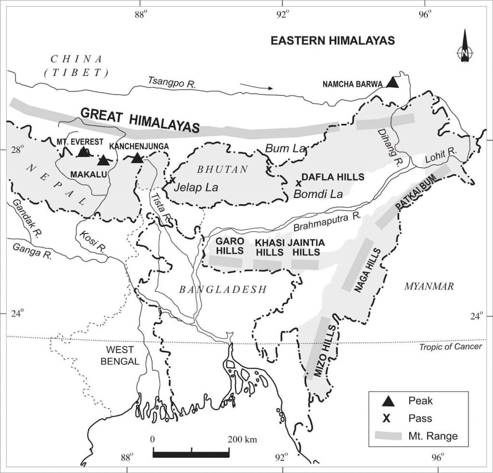
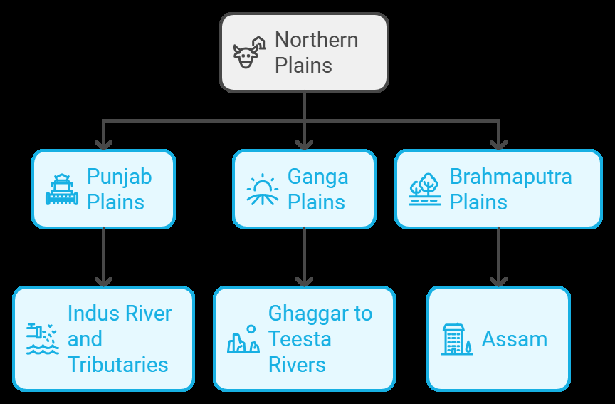
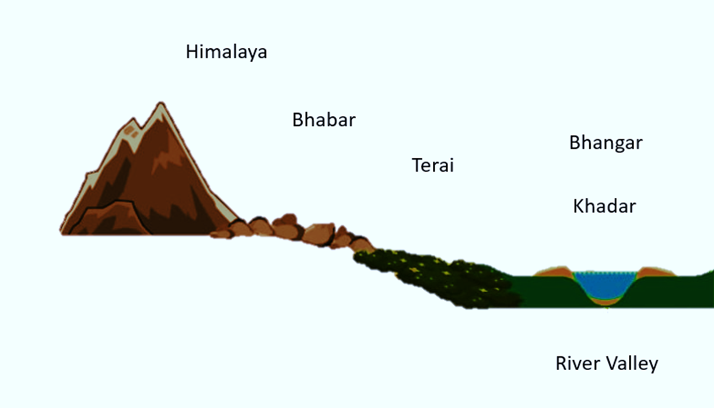

Physiographic Divisions of India: Himalayas and Northern Plains
PHYSIOGRAPHICDIVISIONSOFINDIA:
HIMALAYASANDNORTHERNPLAINS
India is among the world’s oldest and most advanced civilizations, with a unique cultural identity that stretches from the snow-covered Himalayas in the north to the sunny coastal regions of the south. Its diverse geography includes tropical forests along the southwestern coast, the green Brahmaputra river valley in the east, and the expansive Thar Desert in the west.
- India's mainland spans between 8°4 ′ N and 37°6 ′ N in latitude and from 68°7 ′ E to 97°25 ′ E in longitude. This geography results in a longitudinal spread of 2,933 km from east to west and a latitudinal reach of 3,214 km from north to south.
- The Tropic of Cancer, at 23°30 ′ N, divides India into Northern and Southern halves, crossing the states of Gujarat, Rajasthan, Madhya Pradesh, Chhattisgarh, Jharkhand, West Bengal, Tripura, and Mizoram.
- The country’s eastern and western extremities vary by about two hours, owing to a 30-degree difference in longitude. Positioned at 82°30 ′ E, the Indian Standard Meridian, which determines Indian Standard Time (IST), runs near Mirzapur in Uttar Pradesh, setting IST at 5 hours and 30 minutes ahead of GMT.
PhysiographicDivisionsofIndia
India has a wide range of physical features, which have led to its classification into six distinct physiographic divisions, each characterized by its own unique geographical characteristics:
TheHimalayanMountains
The Himalayas
are the
world’s
tallest
and among
its most rugged mountain barriers.
Geologically young and structurally folded mountains, the Great Himalayan Range, also known as the Central Axial Range, stretches approximately 2,500 km from east to west. Its width varies, spanning about 400 km in Kashmir and narrowing to around 150 km in Arunachal Pradesh.
The Himalayas consist of four distinct mountain ranges (from north to south):
- The Trans Himalaya or Tibetan Himalaya
- The Great or Inner Himalayas, also known as Himadri
- The Lesser Himalaya, also called Himachal
- The Shiwalik or Outer Himalaya
TheTransHimalaya
Situated north of the Great Himalaya, the Trans Himalaya includes the Karakoram, Ladakh, Zanskar, and Kailash mountain ranges. Known as the Tibetan Himalayan Region, many of these ranges lie within Tibet.
TheGreatorInnerHimalayas(Himadri)
The Great Himalaya, also called Himadri, is the most continuous and towering range of the Himalayas, with an average height of around 6,000 meters. It includes the tallest and most prominent Himalayan peaks, some of which are:
- Mount Everest (Nepal) – 8,848 m
- Kanchenjunga (India) – 8,598 m
- Makalu (Nepal) – 8,481 m
- Dhaulagiri (Nepal) – 8,172 m
- Nanga Parbat (India) – 8,126 m
- Annapurna (Nepal) – 8,078 m
- Nanda Devi (India) – 7,817 m
- Namcha Barwa (India) – 7,756 m
The Great Himalayas' folds are asymmetric, and their core is composed of granite. This range is permanently snow-covered, and numerous glaciers descend from it.
TheLesserHimalaya(Himachal)
- Located south of Himadri, the Lesser Himalaya consists of highly compressed and altered rocks.
- Its altitude ranges between 3,700 and 4,700 meters, with an average width of about 50 km.
- Key sub-ranges include the Pir Panjal (the longest), Dhaula Dhar, and Mahabharat ranges. This range is home to the scenic valleys of Kashmir, Kullu, and Kangra in Himachal Pradesh, and is known for its popular hill stations.
TheShiwaliksorOuterHimalaya
- The Shiwaliks form the outermost Himalayan range, with a width of 10–15 km and altitudes ranging between 900 m and 1,000 m.
- Composed of unconsolidated sediments deposited by rivers from the main northern ranges, these areas are covered with thick gravel and alluvial deposits.
- Between the Shiwaliks and the Lesser Himalayas lie longitudinal valleys known as Duns.
- Notable Duns include Dehra Dun, Kotli Dun, and Patli Dun, with Dehradun being the largest, measuring approximately 35–45 km in length and 22–25 km in width.
RegionalDivisionsoftheHimalayas(WesttoEast)
The Himalayas are not only divided longitudinally but also regionally, from west to east, into distinct sections:
- Kashmir or North-Western Himalayas This region includes several ranges, such as the Karakoram, Ladakh, Zanskar, and Pir Panjal. The north-eastern part of the Kashmir Himalayas is a cold desert located between the Greater Himalayas and the Karakoram range, while the world-renowned Kashmir Valley lies between the Greater Himalayas and the Pir Panjal range. The Kashmir Himalayas are known for Karewa formations —thick deposits of glacial clay and moraines—used for saffron cultivation. Important passes here include Khardung La (Ladakh range), Zojila (Great Himalayas), Banihal (Pir Panjal), and Photu La (Zanskar range). The region is drained by the Indus River and its tributaries like the Jhelum and Chenab. The southernmost part includes Duns (longitudinal valleys) such as Jammu Dun and Pathankot Dun.
- Himachal and Uttarakhand Himalayas Extending from the Ravi River in the west to the Kali River (a tributary of the Ghaghara) in the east, this region is drained by major rivers such as the Ravi, Beas, and Satluj (tributaries of the Indus) and the Yamuna and Ghaghara (tributaries of the Ganga). The three main Himalayan ranges—the Great Himalayas (Himadri), the Lesser Himalayas (locally known as Dhauladhar in Himachal Pradesh and Nagtibha in Uttarakhand), and the Shiwalik—are prominent in this area. Known for its picturesque hill stations and health resorts, this region features destinations like Dharamshala, Mussoorie, and Shimla. Valleys such as Dehra Dun are distinguishing features here.
- Darjeeling and Sikkim Himalayas Sandwiched between the Nepal Himalayas in the west and the Bhutan Himalayas in the east, this compact yet significant region is known for its swift rivers, especially the Tista. It is home to towering peaks, including Kanchenjunga (8,598 m), the world’s third-highest mountain, and deep valleys. The region lacks the Shiwalik formation but is notable for the Duar formations, which the British developed for tea plantations.
- Arunachal Himalayas Stretching from the Bhutan Himalayas eastward to the Diphu, this region includes notable mountain peaks like Kangtu and Namcha Barwa. The ranges are crossed by fast-flowing, north-to-south rivers that create deep gorges beyond Namcha Barwa. Key rivers here include the Subansiri, Kameng, Dihang, Dibang, and Lohit —all perennial rivers with significant hydroelectric potential due to their steep gradients.
- Eastern Hills and Mountains (Purvanchal) South
of the Dihang Gorge, the Himalayas curve southward along India’s eastern
boundary, forming the Purvanchal hills. Composed mainly of strong sandstone (sedimentary rock) and densely forested, these hills run as parallel ranges and valleys. The Purvanchal consists of the Patkai Hills (Arunachal Pradesh), Naga Hills (Nagaland), Manipur Hills, and the Mizo or Lushai Hills.
TheNorthernPlains
The Northern Plains of India stretch south of the Shiwalik Range and serve as a transitional area between the Himalayas in the north and Peninsular India in the south. Formed by the alluvial deposits of the Indus, Ganga, Brahmaputra, and their tributaries, the plains cover around 7 lakh sq. km, measuring approximately 2400 km in length and between 240 to 320 km in width. These fertile plains, enriched with rich soil, adequate water, and a favorable climate, make this region highly productive for agriculture. The Northern Plains are broadly divided into three sections:
- The Punjab Plains: Located in the western part, this area is formed by the Indus and its tributaries. A significant portion of these plains extends into Pakistan.
- The Ganga Plains: Spanning from the Ghaggar to the Teesta rivers, this area covers states such as Haryana, Delhi, Uttar Pradesh, Bihar, parts of Jharkhand, and West Bengal.
- The Brahmaputra Plains: Primarily located in Assam.
The Northern Plains can further be classified into four regions based on their relief features:
- Bhabar: A narrow belt, 8-16 km wide, south of the Shiwaliks where rivers deposit pebbles. Due to the high porosity of this region, streams typically disappear here.
- Terai: South of Bhabar, this 10-20 km wide marshy and swampy belt has re-emerging streams, abundant vegetation, and diverse wildlife.
- Bhangar: This area of older alluvium forms the largest part of the plains, lying above the floodplains and presenting a terrace-like topography with calcareous soil deposits (kankar).
- Khadar: These younger alluvial floodplains are replenished annually by river silt, making them highly fertile and suitable for intensive agriculture.








